컴퓨터활용능력-1급 (2015-10-17 기출문제)
1과목: 컴퓨터 일반
1. 다음 중 컴퓨터 그래픽과 관련하여 벡터(Vector) 이미지에 관한 설명으로 옳지 않은 것은?
- 이미지의 크기를 확대하여도 화질에 손상이 없다.
- 점과 점을 연결하는 직선이나 곡선을 이용하여 이미지를 구성한다.
- 대표적인 파일 형식에는 AI, WMF 등이 있다.
- 픽셀로 이미지를 표현하며, 래스터(Raster) 이미지라고도 한다.
(정답률: 87%)

2. 다음 중 Windows 7에서 사용하는 [휴지통]에 대한 설명으로 옳지 않은 것은?(윈도우 10 검증 완료)
- [명령 프롬프트] 창에서 삭제한 파일은 휴지통과 관계 없이 영구히 삭제된다.
- 휴지통의 크기는 각각의 드라이브마다 다르게 지정할 수 있다.
- USB 드라이브에서 삭제한 파일은 휴지통에서 복원 메뉴로 복원 할 수 있다.
- 휴지통의 최대 크기는 [휴지통 속성] 창에서 변경할 수 있다.
(정답률: 82%)
3. 다음 중 전자음향장치나 디지털 악기 간의 통신규약으로 음악의 연주 정보 및 여러 가지 기능에 대한 정보를 포함하여 저장하는 데이터 형식은?
- WAV
- RA/RM
- MP3
- MIDI
(정답률: 75%)
4. 다음 중 저작권에 대한 설명으로 가장 적절하지 않은 것은?
- 저작 재산권은 저작자의 생존하는 동안과 저작시점에 따라 사망 후 50년간 또는 70년간 존속한다.
- 저작권은 저작자의 권리를 보호함을 목적으로 한다.
- 영리를 목적으로 하지 않는 공연 또는 방송인 경우 저작 재산권을 제한할 수 있다.
- 프로그램을 작성하기 위하여 사용하고 있는 프로그램 언어, 규약 및 해법에도 저작권이 적용된다.
(정답률: 62%)
5. 다음 중 인터넷 전자우편에서 사용하는 POP3 프로토콜에 관한 설명으로 옳은 것은?
- 사용자가 작성한 이메일을 다른 사람의 계정으로 전송해 주는 역할을 한다.
- 메일 서버의 이메일을 사용자의 컴퓨터로 가져올 수 있도록 메일 서버에서 제공하는 프로토콜이다.
- 멀티미디어 전자우편을 주고 받기 위한 인터넷 메일의 표준 프로토콜이다.
- 웹 브라우저에서 제공하지 않는 멀티미디어 파일을 확인하여 실행시켜주는 프로토콜이다.
(정답률: 81%)
6. 다음 중 시스템 보안과 관련한 불법적인 형태에 대한 설명으로 옳지 않은 것은?
- 피싱(Phishing)은 거짓 메일을 보내서 가짜 금융기관 등의 가짜 웹 사이트로 유인하여 정보를 빼내는 행위이다.
- 스푸핑(Spoofing)은 검증된 사람이 네트워크를 통해 데이터를 보낸 것처럼 데이터를 변조하여 접속을 시도하는 행위이다.
- 분산 서비스 거부 공격(DDOS)은 마이크로소프트사의 MS-DOS를 운영체제로 사용하는 컴퓨터에 네트워크를 통해 불법적으로 접속하는 행위이다.
- 키로거(Key Logger)는 키 입력 캐치 프로그램을 사용하여 ID나 암호를 알아내는 행위이다.
(정답률: 83%)
7. 다음 중 휴대폰을 모뎀처럼 활용하는 방법으로, 컴퓨터나 노트북 등의 IT 기기를 휴대폰에 연결하여 무선 인터넷을 사용할 수 있게 하는 기능은?
- 와이파이
- 블루투스
- 테더링
- 와이브로
(정답률: 90%)
8. 다음 중 데이터 통신망에 관한 설명으로 옳지 않은 것은?
- LAN은 자원 공유를 목적으로 작은 기관의 구내에서 사용하며 전송거리가 짧고 고속 전송이 가능하지만 WAN에 비해 에러 발생률이 높은 통신망이다.
- VAN은 기간 통신망 사업자로부터 회선을 빌려 기존의 정보에 새로운 가치를 부여하여 다수의 이용자에게 판매하는 통신망이다.
- B-ISDN은 광대역 네트워크에서 데이터, 음성, 고해상도의 동영상 등의 다양한 서비스를 디지털 통신망을 이용해 제공하는 고속 통신망이다.
- WLL은 전화국과 가입자 단말 사이의 회선을 유선 대신 무선 시스템을 이용하여 구성하는 통신망이다.
(정답률: 70%)
9. 다음 중 4세대 이동통신에 대한 설명으로 옳지 않은 것은?
- 하나의 단말기를 통해 위성망, 무선랜, 인터넷 등을 모두 사용할 수 있는 서비스이다.
- 3세대 이동통신으로 불리는 IMT-2000에 뒤이은 이동통신 서비스이다.
- 4세대 이동통신 표준으로는 WCDMA, LTE-advanced, Wibro-Evolution이 있다.
- 동영상, 인터넷 방송 등의 대용량 데이터를 높은 속도로 처리할 수 있으며 3차원 영상 데이터를 이용한 통화가 가능하다.
(정답률: 64%)
10. 다음 중 컴퓨터에서 사용되는 운영체제에 관한 설명으로 옳지 않은 것은?
- 사용자에게 편리함을 제공하고, 시스템의 생산성을 높여주는 역할을 한다.
- 주요 기능은 프로세스 관리, 기억장치 관리, 주변장치 관리, 파일 관리 등으로 여러 가지 기능을 처리한다.
- 운영체제의 목적은 처리 능력의 향상, 응답 시간의 최대화, 사용 가능도의 향상, 신뢰도의 향상이다.
- 제어 프로그램과 처리 프로그램으로 구성된다.
(정답률: 75%)
11. 다음 중 시스템 소프트웨어에 해당하지 않는 것은?
- 부트 로더
- 장치 드라이버
- C 런타임 라이브러리
- 웹 브라우저
(정답률: 68%)
12. 다음 중 RAM(Random Access Memory)에 대한 설명으로 옳은 것은?
- 주로 펌웨어(Firmware)를 저장한다.
- 주기적으로 재충전(Refresh)이 필요한 DRAM은 주기억 장치로 사용된다.
- 전원이 꺼져도 기억된 내용이 사라지지 않는 비휘발성 메모리로 읽기만 가능하다.
- 컴퓨터의 기본적인 입출력 프로그램, 자가진단 프로그램 등이 저장되어 있어 부팅 시 실행된다.
(정답률: 71%)
13. 다음 중 HDD와 비교할 때 SSD에 대한 특징으로 옳지 않은 것은?
- 초고속 메모리 칩(chip)에 데이터를 저장한다.
- 속도가 빠르나 외부의 충격에는 매우 약하다.
- 발열, 소음, 전력 소모가 적다.
- 소형화, 경량화 할 수 있다는 장점이 있다.
(정답률: 85%)
14. 다음 중 컴퓨터의 이상 증상과 해결 방법의 연결이 가장 적절하지 않은 것은?
- 하드디스크로 부팅이 되지 않는 경우: USB나 CD-ROM으로 부팅이 되면 하드디스크 손상 점검 후 운영체제 다시 설치
- 모니터 화면이 보이지 않는 경우: 모니터의 전원 및 연결 부분 점검
- 프린터가 작동되지 않는 경우: 프린터와 컴퓨터 연결 부분 확인 및 프린터 드라이버 재설치
- 컴퓨터 속도가 심하게 느려진 경우 : 메인보드 또는 하드디스크 교체
(정답률: 73%)
15. 다음 중 Windows 7에서의 프린터 설치에 관한 설명으로 옳지 않은 것은?(윈도우 10 검증 완료)
- Bluetooth 프린터를 설치하려면 컴퓨터에 Bluetooth 무선 어댑터를 연결하거나 켠 후 [프린터 추가 마법사]를 실행한다.
- 새로운 프린터를 설치하는 과정에서 네트워크 프린터를 기본 프린터로 설정하려면 반드시 스풀링의 설정이 필요하다.
- 로컬 프린터 설치 시 프린터가 USB(범용 직렬버스) 모델인 경우에는 프린터를 컴퓨터에 연결하면 Windows에서 자동으로 검색하고 설치한다.
- 공유 프린터 설정 시 네트워크가 홈 그룹으로 설정되면 프린터가 자동으로 공유되며, 프린터가 연결된 컴퓨터의 전원이 켜져 있어야 프린터의 사용이 가능하다.
(정답률: 67%)
16. 다음 중 Windows 7에서 제공되는 Windows 원격 지원 기능에 관한 설명으로 옳지 않은 것은?(윈도우 10 검증 완료)
- 사용하는 운영체제의 종류와 상관없이 상대방의 컴퓨터에서 사용자 컴퓨터에 연결하여 편리하게 문제 해결 방법을 제시할 수 있도록 하는 기능이다.
- 상대방이 연결한 후에 사용자 컴퓨터 화면을 공유하여 실시간으로 채팅을 할 수 있으며 사용자가 허락하면 원격으로 사용자 컴퓨터를 조작하고 동작시킬 수 있다.
- 요청을 받은 사람만 Windows 원격 지원을 사용하여 내 컴퓨터에 연결할 수 있도록 모든 세션이 암호화되고 암호로 보호된다.
- 원격 지원을 사용하는 동안 상대방과 사용자는 인터넷에 연결되어 있어야 하며 Windows 방화벽을 사용하고 있으면 원격 지원을 위해 임시로 방화벽 포트를 열어야 한다.
(정답률: 54%)
17. 다음 중 Windows 7의 파일 또는 폴더의 암호화에 대한 설명으로 옳지 않은 것은?(윈도우 10 검증 완료)
- 암호화한 파일 또는 폴더에 대한 액세스를 원하는 다른 사용자는 자신의 EFS(파일 시스템 암호화) 인증서를 미리 해당 파일에 추가해야 한다.
- 폴더 또는 파일을 처음 암호화할 때 암호화 인증서가 자동으로 만들어진다.
- NTFS 파일 시스템을 사용하지 않는 컴퓨터 또는 드라이브로 파일을 복사하더라도 설정된 암호는 유지된다.
- 파일 또는 폴더의 암호화에 사용되는 암호화 키는 항상 암호화 인증서와 관련되어 있거나 연결되어 있다.
(정답률: 57%)
18. 다음 중 Windows 7의 시스템 복원에 관한 설명으로 옳지 않은 것은?(윈도우 10 검증 완료)
- 시스템에 해를 끼칠 수 있는 변경사항을 시스템 복원을 이용하여 취소하고, 시스템의 설정 및 성능을 복원할 수 있다.
- 전자 메일, 문서 또는 사진과 같은 개인 파일에 영향을 주지 않고 컴퓨터에 대한 시스템 변경 내용을 실행 취소할 수 있다.
- 시스템 복원을 수행하면 이전에 삭제된 파일이나 폴더가 휴지통에서 원래 위치로 복원된다.
- 시스템 복원은 시스템 보호 기능을 사용하여 컴퓨터에서 자동으로 복원 지점을 만들고 저장한다.
(정답률: 71%)
19. 다음 중 Windows 7의 [제어판]-[마우스]에서 설정 가능한 기능으로 옳지 않은 것은?(윈도우 10 검증 완료)
- 입력할 때 포인터 숨기기를 할 수 있다.
- <Alt>키를 눌러 포인터의 위치를 표시할 수 있다.
- 포인터 자국의 길이를 조정하여 표시할 수 있다.
- 포인터의 그림자를 사용할 수 있다.
(정답률: 64%)
20. 다음 중 바탕 화면에 바로 가기 아이콘을 만들기 위한 방법으로 옳지 않은 것은?
- 바탕 화면의 빈 곳에서 마우스 오른쪽 버튼을 눌러 [새로 만들기]-[바로 가기] 메뉴를 선택한다.
- 파일에서 마우스 오른쪽 버튼을 누른 채 빈 곳으로 드래그 한 후 [여기에 바로 가기 만들기] 메뉴를 선택한다.
- [Windows 탐색기]에서 파일을 <Ctrl>키를 누른 채 드래그하여 바탕 화면에 놓는다.
- 파일을 < Ctr l>+ <C>키로 복사 한 후 바탕 화면의 빈곳에서 마우스 오른쪽 버튼을 눌러 [바로 가기 붙여넣기] 메뉴를 선택한다.
(정답률: 67%)
2과목: 스프레드시트 일반
21. 다음 중 [데이터] 탭 [외부 데이터 가져오기] 그룹의 각 명령에 대한 설명으로 옳지 않은 것은?
- [기타 원본]-[Microsoft Query]를 이용하면 여러 테이블을 조인(join)한 결과를 워크시트로 가져올 수 있다.
- [기존 연결]을 이용하면 Microsoft Query에서 작성한 쿼리 파일(*.dqy)의 실행 결과를 워크시트로 가져올 수 있다.
- [웹]을 이용하면 웹 페이지의 모든 데이터를 원본 그대로 가져올 수 있다.
- [Access]를 이용하면 원본 데이터의 변경 사항이 워크시트에 반영되도록 설정할 수 있다.
(정답률: 70%)
22. 다음 중 실행 취소 및 다시 실행 명령에 대한 설명으로 옳지 않은 것은?
- 작업을 취소하려면 빠른 실행 도구 모음에서 [실행 취소]()를 선택하거나 [Ctrl]+[Z]키를 누른다.
- 작업을 취소한 경우 [Ctrl]+[D]키를 눌러 원래대로 되돌릴 수 있다.
- 시트 이름 변경, 시트 위치 이동, 시트 복사와 같은 작업은 취소할 수 없다.
- 빠른 실행 도구 모음에서 [실행 취소] 옆의 화살표()를 클릭하여 여러 작업을 한 번에 취소할 수도 있다.
(정답률: 61%)
23. 다음 중 괄호( ) 안에 해당하는 바로 가기 키로 옳은 것은?
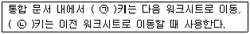
- (ㄱ) Shift + Page Down , (ㄴ) Shift + Page Up
- (ㄱ) Ctrl + Page Down , (ㄴ) Ctrl + Page Up
- (ㄱ) Ctrl + ← , (ㄴ) Ctrl + ←
- (ㄱ) Shift + ↑ , (ㄴ) Shift + ↓
(정답률: 71%)
24. 다음 중 아래의 [A1:E5] 영역에서 B열과 D열에만 배경색을 설정하기 위한 조건부 서식의 규칙으로 옳은 것은?
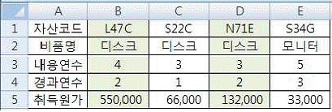
- =MOD(COLUMNS($A1),2)=1
- =MOD(COLUMNS(A$1),2)=0
- =MOD(COLUMN($A1),2)=0
- =MOD(COLUMN(A$1),2)=0
(정답률: 41%)
25. 다음 중 서식 코드를 셀의 사용자 지정 표시 형식으로 설정한 경우 입력 데이터와 표시 결과가 옳지 않은 것은?(단, 열 너비는 표준 열 너비이다.)
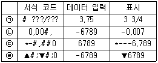
- (ㄱ)
- (ㄴ)
- (ㄷ)
- (ㄹ)
(정답률: 79%)
26. 다음 중 워크시트에 관한 설명으로 옳지 않은 것은?
- 워크시트가 연속적으로 여러 개 선택된 상태에서 <Shift>+<F11>키를 누르면 선택된 워크시트의 개수 만큼 새로운 워크시트가 삽입된다.
- 워크시트의 이름을 변경하지 못하도록 하려면 [시트 보호] 대화상자의 ‘잠긴 셀의 내용과 워크시트 보호’에 체크 표시한다.
- 워크시트를 숨긴 경우 시트 탭 표시줄에는 표시되지 않지만 다른 워크시트나 다른 통합문서에서 계속 참조 할 수 있다.
- [페이지 레이아웃] 탭 [페이지 설정] 그룹의 ‘배경’ 명령을 이용하여 시트 배경 이미지를 화면에 표시할 수 있으나 인쇄되지는 않는다.
(정답률: 34%)
27. 다음 중 VBA에서 각 영역 선택을 위한 Range 속성 관련 코드로 옳지 않은 것은?
- [A1:D10] 영역 선택 → Range("A1:D10").Select
- “판매량”으로 정의된 이름 영역 선택 →Range(“판매량”).Select
- [A1] 셀, [C5] 셀 선택 → Range("A1", "C5").Select
- [A1:C5] 영역 선택 → Range(Cells(1, 1), Cells(5, 3)).Select
(정답률: 51%)
28. 아래는 Do...Loop 문을 이용하여 1에서부터 100까지의 홀수 합을 메시지 상자에 표시하는 코드이다. 다음 중 (ㄱ)과 (ㄴ)에 들어갈 식으로 옳은 것은?
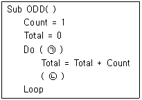
- (ㄱ) While Count < 100 (ㄴ) Count = Count + 2
- (ㄱ) Until Count < 100 (ㄴ) Count = Count + 2
- (ㄱ) Until Count > 100 (ㄴ) Count = Count + 1
- (ㄱ) While Count > 100 (ㄴ) Count = Count + 1
(정답률: 44%)
29. 다음 중 셀 영역을 선택한 후 상태 표시줄의 바로 가기 메뉴인 [상태 표시줄 사용자 지정]에서 선택할 수 있는 자동 계산에 해당되지 않는 것은?
- 선택한 영역 중 숫자 데이터가 입력된 셀의 수
- 선택한 영역 중 문자 데이터가 입력된 셀의 수
- 선택한 영역 중 데이터가 입력된 셀의 수
- 선택한 영역의 합계, 평균, 최소값, 최대값
(정답률: 73%)
30. 다음 중 아래의 워크시트에서 [C1] 셀에 수식 ‘=A1+B1+C1’을 입력할 경우 발생하는 상황으로 옳은 것은?
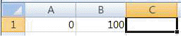
- [C1] 셀에 ‘#REF!’ 오류 표시
- [C1] 셀에 ‘#NUM!’ 오류 표시
- 데이터 유효성 오류 메시지 창 표시
- 순환 참조 경고 메시지 창 표시
(정답률: 50%)
31. 다음 중 아래의 워크시트에서 ‘김인수’ 사원의 근속년수를 오늘 날짜를 기준으로 구하고자 할 때, [D8] 셀에 입력할 수식으로 옳은 것은?
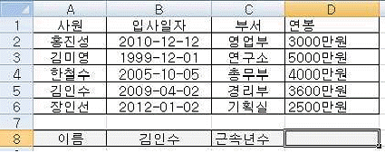
- =YEAR(TODAY())-YEAR(HLOOKUP(B8,A2:D6,2,0))
- =YEAR(TODAY())-YEAR(HLOOKUP(B8,A2:D6,2,1))
- =YEAR(TODAY())-YEAR(VLOOKUP(B8,A2:B6,2,0))
- =YEAR(TODAY())-YEAR(VLOOKUP(B8,A2:B6,2,1))
(정답률: 52%)
32. 다음 중 아래의 차트에 대한 설명으로 옳지 않은 것은?
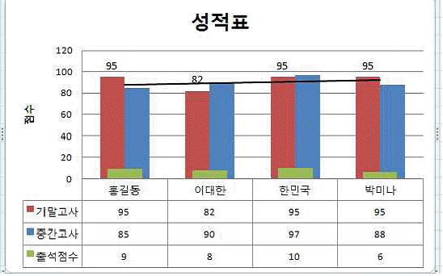
- 기본 세로 축 제목은 ‘제목 회전’으로 “점수”가 입력되었다.
- 세로 (값) 축의 주 단위는 20이고, 보조 눈금선은 표시되지 않았다.
- 기말고사에 대한 변화 추세를 파악하기 위하여 추세선과 데이터 레이블을 표시하였다.
- 범례와 범례 표지가 표시되지 않았다.
(정답률: 68%)
33. 다음 중 차트 편집에 관한 설명으로 옳지 않은 것은?
- 차트를 삭제하여도 원본 데이터에는 영향을 미치지 않지만, 워크시트에서 차트 데이터 범위 영역 내의 데이터를 수정하는 경우 차트에도 수정 사항이 반영된다.
- 두 개 이상의 차트 종류를 혼합하여 작성할 수는 있으나 2차원 차트와 3차원 차트를 혼합하여 작성할 수는 없다.
- 워크시트에서 차트 데이터 범위 영역의 중간에 항목을 삽입하는 경우 차트에서도 항목이 삽입된다.
- 워크시트에서 차트 데이터 범위 영역의 중간에 데이터 계열을 삽입하는 경우 차트에서도 데이터 계열이 삽입 된다.
(정답률: 32%)
34. 다음 중 [페이지 설정] 대화상자의 [시트] 탭 옵션에 대한 설명으로 옳지 않은 것은?
- ‘메모’는 메모를 인쇄에 포함하지 않는 ‘(없음)’외에 ‘시트 끝’, ‘시트에 표시된 대로’ 중 선택하여 인쇄 위치를 지정할 수 있다.
- ‘행/열 머리글’을 선택하면 워크시트의 행 머리글과 열 머리글을 포함하여 인쇄한다.
- ‘반복할 행’은 매 페이지 상단에 제목으로 인쇄될 영역을 지정하는 것으로 비연속 구간의 여러 행을 선택할 수 있다.
- ‘셀 오류 표시’는 ‘표시된 대로’ 외에 ‘<공백>’, ‘--’, ‘#N/A’ 중 선택하여 표시할 수 있다.
(정답률: 55%)
35. 다음 중 워크시트의 화면 [확대/축소]에 관한 설명으로 옳지 않은 것은?
- 여러 워크시트가 선택된 상태에서 확대/축소 배율을 변경하면 선택된 워크시트 모두 확대/축소 배율이 적용된다.
- [보기] 탭 [확대/축소] 그룹의 [선택 영역 확대/축소] 명령은 선택된 영역으로 전체 창을 채우도록 워크 시트를 확대하거나 축소한다.
- 확대/축소 배율은 최소 10%, 최대 400%까지 설정할 수 있다.
- [확대/축소] 대화상자에서 지정한 배율은 인쇄 시 [페이지 설정]의 확대/축소 배율에 반영된다.
(정답률: 67%)
36. 직원현황 표에서 이름이 세 글자이면서 ‘이’로 시작하고 TOEIC 점수가 600점 이상 800점 미만인 직원이거나, 직급이 대리이면서 연차가 3년 이상인 직원의 데이터를 추출하고자 한다. 다음 중 이를 위한 [고급 필터]의 검색 조건으로 옳은 것은?
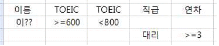
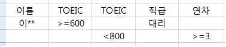
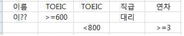
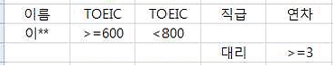
(정답률: 67%)
37. 다음 중 아래의 부분합 결과를 통해 명확히 알 수 있는 내용으로 옳은 것은?
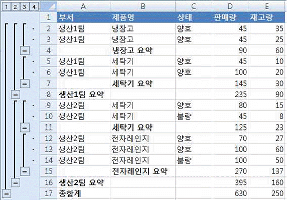
- [부분합] 대화상자에서 ‘새로운 값으로 대치’ 옵션과 ‘데이터 아래에 요약 표시’ 옵션을 해제하여 실행하였다.
- 부분합으로 설정된 그룹의 윤곽이 자동 윤곽으로 재설정 되었다.
- 부분합 수행 전 첫 번째 정렬 기준으로 ‘제품명’, 두 번째 정렬 기준으로 ‘부서’, 세 번째 정렬 기준으로 ‘판매량’을 선택하여 각각 오름차순 정렬을 실행하였다.
- ‘부서’를 그룹화할 항목으로 선택하여 ‘판매량’과 ‘재고량’의 합계를 계산한 후 ‘제품명’을 그룹화 할 항목으로 선택하여 ‘판매량’과 ‘재고량’의 합계를 계산하였다.
(정답률: 54%)
38. 다음 중 데이터 정렬에 대한 설명으로 옳지 않은 것은?
- 정렬 조건을 최대 64개까지 지정할 수 있어 다양한 조건으로 정렬할 수 있다.
- 숨겨진 열이나 행은 정렬 시 이동되지 않으므로 데이터를 정렬하기 전에 숨겨진 열과 행을 표시하는 것이 좋다.
- 정렬 기준을 글꼴 색이나 셀 색으로 선택한 경우의 기본 정렬 순서는 오름차순의 경우 밝은 색에서 어두운 색 순으로 정렬된다.
- 첫째 기준 뿐만 아니라 모든 정렬 기준에서 사용자 지정 목록을 정렬 기준으로 사용할 수 있다.
(정답률: 69%)
39. 아래의 워크시트와 같이 데이터가 입력되도록 [A1:C3] 영역을 선택하여 2차원 배열 상수를 작성하고자 한다. 다음 중 이를 위한 배열 수식으로 옳은 것은?
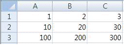
- ={1,2,3;10,20,30;100,200,300}
- ={1,2,3,10,20,30,100,200,300}
- ={1;2;3;10;20;30;100;200;300}
- ={1;2;3,10;20;30,100;200;300}
(정답률: 70%)
40. 다음 중 아래의 워크시트에서 [F2] 셀에 소속이 ‘영업 1부’인 총매출액의 합계를 계산하기 위한 수식으로 옳지 않은 것은?
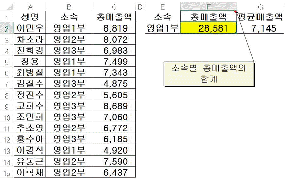
- =DSUM(A1:C15,3,E1:E2)
- =DSUM(A1:C15,C1,E1:E2)
- =SUMIF(B2:B15,E2,C2:C15)
- =SUMIF(A1:C15,E2,C1:C15)
(정답률: 52%)
3과목: 데이터베이스 일반
41. 다음 중 폼을 디자인 보기나 데이터시트 보기로 열기 위해 사용하는 매크로 함수는?
- RunCommand
- OpenForm
- RunMacro
- RunSQL
(정답률: 81%)
42. 다음 중 아래의 프로그램을 수행한 후 변수 Sum의 값으로 옳은 것은?
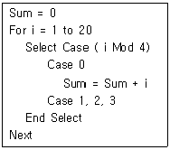
- 45
- 55
- 60
- 70
(정답률: 60%)
43. 다음 중 데이터베이스 모델에 대한 설명으로 옳지 않은 것은?
- 계층형 모델은 하나의 루트 레코드 타입과 종속된 레코드 타입으로 구성된 트리 구조를 가진다.
- 네트워크형 모델은 그래프 표현을 이용하여 레코드간의 관계를 다대다 관계(N:M)로 표현할 수 있다.
- 관계형 모델은 행과 열로 구성되는 테이블로 표시되고, 각 테이블 간에는 공통 속성을 통해 관계가 성립된다.
- 객체지향형 모델은 데이터를 개체와 관계로 표현하며, 일반화, 집단화 등의 개념을 추가하여 복잡한 데이터를 나타낸다.
(정답률: 52%)
44. 다음 중 관계형 데이터베이스 관리 시스템(RDBMS)의 종류에 해당하지 않는 것은?
- MS-SQL Server
- 오라클(ORACLE)
- MY-SQL
- 파이썬(Python)
(정답률: 77%)
45. 다음 중 디자인이 미리 정해져 있는 거래 명세서나 세금 계산서를 가장 손쉽게 생성할 수 있는 보고서 관련 명령은?
- 새 보고서
- 보고서 마법사
- 보고서 디자인
- 업무 문서 양식 마법사
(정답률: 65%)
46. 다음 중 콤보 상자 컨트롤의 각 속성에 대한 설명으로 옳지 않은 것은?
- 행 원본(Row Source): 콤보 상자 컨트롤에서 사용할 데이터 설정
- 컨트롤 원본(Control Source): 연결할(바운드 할) 데이터 설정
- 바운드 열(Bound Column): 콤보 상자 컨트롤에 저장할 열 설정
- 사용 가능(Enabled): 컨트롤에 입력된 데이터의 편집 여부 설정
(정답률: 59%)
47. 다음 중 보고서의 레코드 원본에 대한 설명으로 옳지 않은 것은?
- [보고서 마법사]를 통해 원하는 필드들을 손쉽게 선택하여 레코드 원본으로 지정할 수 있다.
- 기본적으로 하나의 테이블에서만 필요한 필드를 선택하여 레코드 원본으로 지정할 수 있다.
- [속성 시트]의 ‘레코드 원본’ 드롭다운 목록에서 테이블이나 쿼리를 선택하여 지정할 수 있다.
- 쿼리 작성기를 통해 새 쿼리를 작성하여 레코드 원본으로 지정할 수 있다.
(정답률: 68%)
48. 다음 중 각 쿼리문에 대한 설명으로 옳지 않은 것은?
- SELECT Weekday([출고일], 1) FROM 출고; → 출고일 필드의 날짜 값에서 요일을 나타내는 정수를 표시하며, 일요일을 1로 시작한다.
- SELECT DateDiff("d", [출고일], Date()) FROM 출고; → 출고일 필드의 날짜 값에서 오늘 날짜까지 경과한 일자 수를 표시한다.
- SELECT DateAdd("y", 5, Date()) AS 날짜계산; → 오늘 날짜에서 5년을 더한 날짜를 표시한다.
- SELECT * FROM 출고 WHERE Month([출고일])=9; → 출고일 필드의 날짜 값에서 9월에 해당하는 레코드들만 표시한다.
(정답률: 47%)
49. 다음 중 보고서 각 보기 형태에 대한 설명으로 옳지 않은 것은?
- ‘보고서 보기’는 인쇄 미리 보기와 비슷하지만 페이지를 구분하여 화면에 보고서를 표시한다.
- ‘레이아웃 보기’는 보고서 내용을 직접 보면서 다양한 서식과 컨트롤 속성을 설정할 수 있다.
- ‘디자인 보기’는 보고서에 삽입된 컨트롤의 속성, 맞춤, 위치 등을 설정할 수 있으며, 보고서 내용은 볼 수 없다.
- ‘인쇄 미리 보기’는 [인쇄] 메뉴의 [인쇄 미리 보기]를 실행하여 보는 것과 같은 것으로 인쇄 될 모양을 미리 보여준다.
(정답률: 42%)
50. 아래는 [학생] 테이블의 디자인 보기와 [학생] 테이블을 이용한 SQL문이다. 다음 중 아래 SQL문의 실행 결과에 대한 설명으로 옳은 것은?
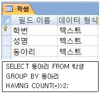
- 같은 성명을 가진 학생이 3명 이상인 동아리들을 검색한다.
- 동아리를 3개 이상 가입한 학생들을 검색한다.
- 3개의 동아리 중 하나라도 가입한 학생들을 검색한다.
- 동아리에 가입한 학생이 3명 이상인 동아리들을 검색한다.
(정답률: 64%)
51. 다음 중 자료 분석에 매우 유용한 결과를 보여주는 크로스탭 쿼리에 관한 설명으로 옳은 것은?
- 크로스탭 쿼리는 값을 요약한 다음 세 가지의 집합 기준으로 그룹화 한다.
- 열과 행이 교차하는 곳에는 숫자 값을 사용하는 필드만 선택 가능하다.
- 크로스탭 쿼리 작성 시 행 머리글은 최대 3개까지 필드를 지정할 수 있다.
- 크로스탭 쿼리는 폼 또는 보고서 개체를 데이터 원본으로 사용한다.
(정답률: 51%)
52. 다음 중 쿼리문의 구문 형식이 옳지 않은 것은?
- insert into member(id, password, name, age) values('a001', '1234', 'kim', 20);
- update member set age=17 where id='a001';
- select * distinct from member where age=17;
- delete from member where id='a001';
(정답률: 50%)
53. 다음 중 폼에서 컨트롤을 선택하는 방법에 대한 설명으로 옳은 것은?
- 여러 개의 컨트롤들을 비순차적으로 선택하려면 <Ctrl>키를 누른 채 원하는 컨트롤을 각각 클릭한다.
- 일정 영역의 컨트롤들을 한 번에 모두 선택하려면 마우스로 선택할 컨트롤들이 다 포함되도록 해당 영역을 드래그 한다.
- 정렬된 여러 개의 컨트롤들을 모두 선택하려면 맨 위에 위치한 컨트롤을 클릭한 후 마지막에 위치한 컨트롤을 <Shift>키를 누른 채 클릭한다.
- 본문 영역 내의 컨트롤들만 모두 선택하려면 <Ctrl>+<A>키를 누른다.
(정답률: 36%)
54. 다음 중 외부 데이터 가져오기 기능을 이용하여 테이블에 데이터를 가져 올 때 적절하지 않은 파일 형식은?
- 텍스트 파일
- Excel 파일
- Word 파일
- XML 파일
(정답률: 63%)
55. ‘부서코드’를 기본키로 하는 [부서] 테이블과 ‘부서코드’를 포함한 사원정보가 있는 [사원] 테이블을 이용하여 관계를 설정하였다. 다음 중 이와 관련된 관계 설정에 대한 설명으로 옳은 것은? (단, 한 부서에는 여러 명의 사원이 소속되어 있으며, 한 사원은 하나의 부서에 소속된다.)
- ‘항상 참조 무결성 유지’를 설정하면 [사원] 테이블에 입력하려는 ‘사원’의 ‘부서코드’는 반드시 [부서] 테이블에 존재해야만 한다.
- ‘항상 참조 무결성 유지’를 설정하면 [부서] 테이블에서 ‘부서코드’가 바뀌는 경우 [사원] 테이블에 있는 ‘사원’의 ‘부서코드’도 무조건 자동으로 바뀐다.
- ‘항상 참조 무결성 유지’를 설정하지 않더라도 [사원] 테이블에 입력하려는 ‘사원’의 ‘부서코드’는 반드시 [부서] 테이블에 존재해야만 한다.
- ‘항상 참조 무결성 유지’를 설정하지 않더라도 [사원] 테이블에서 사용 중인 ‘부서코드’는 [부서] 테이블에서 삭제할 수 없다.
(정답률: 58%)
56. 다음 중 테이블에 입력된 날짜 필드의 값을 ‘2015-10-13’과 같은 형식으로 표시하고자 할 때 테이블의 디자인 보기에서 지정해야 할 ‘형식’ 속성 값으로 옳은 것은?
- 기본 날짜
- 자세한 날짜
- 보통 날짜
- 간단한 날짜
(정답률: 68%)
57. 다음 중 테이블에서의 필드 이름 지정 규칙에 대한 설명으로 옳은 것은?
- 필드 이름의 첫 글자는 숫자로 시작할 수 없다.
- 테이블 이름과 동일한 이름을 필드 이름으로 지정할 수 없다.
- 한 테이블 내에 동일한 이름의 필드를 2개 이상 지정할 수 없다.
- 필드 이름에 문자, 숫자, 공백, 특수문자를 조합한 모든 기호를 포함할 수 있다.
(정답률: 49%)
58. 다음 중 폼 작성 시 속성 설정에 대한 설명으로 옳지 않은 것은?
- 폼은 데이터의 입력, 편집 작업 등을 위한 사용자와의 인터페이스로 테이블, 쿼리, SQL문 등을 ‘레코드 원본’ 속성으로 지정할 수 있다.
- 폼의 제목 표시줄에 표시되는 텍스트는 ‘이름’ 속성을 이용하여 변경할 수 있다.
- 폼의 보기 형식은 ‘기본 보기’ 속성에서 단일 폼, 연속 폼, 데이터시트, 피벗 테이블, 피벗 차트, 분할 표시 폼 중 선택할 수 있다.
- 이벤트의 작성을 위한 작성기는 식 작성기, 매크로 작성기, 코드 작성기 중 선택할 수 있다.
(정답률: 43%)
59. [만들기]탭 [폼] 그룹의 명령을 이용하여 폼 보기와 데이터 시트 보기를 동시에 표시하는 폼을 만들고자 한다. 다음 중 가장 적절한 폼 만들기 명령은?
- 여러 항목
- 폼 분할
- 폼 마법사
- 모달 대화상자
(정답률: 75%)
60. 다음 중 폼 마법사를 이용하여 폼을 작성할 때 폼의 모양을 지정하기 위한 선택 항목에 해당하지 않는 것은?
- 컬럼 형식
- 피벗 테이블
- 데이터시트
- 맞춤
(정답률: 43%)